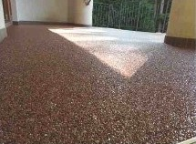
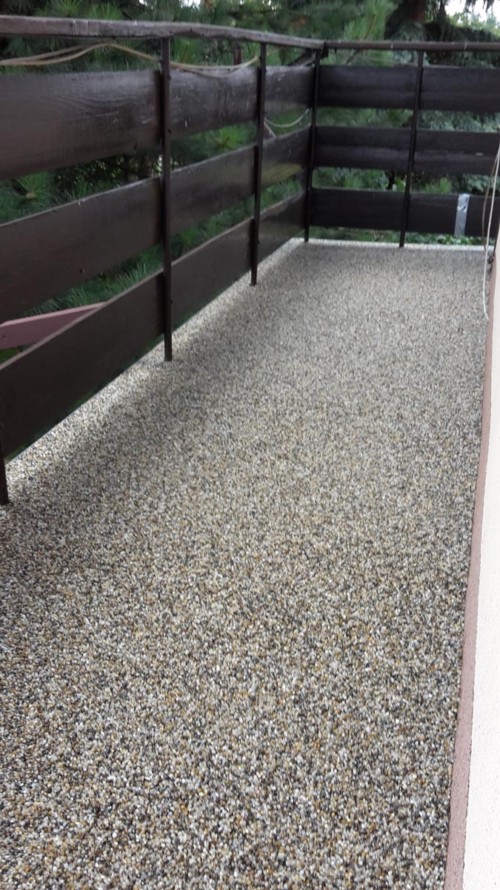
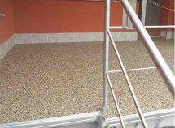
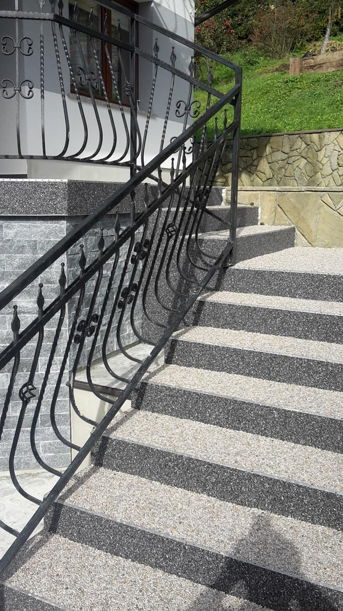
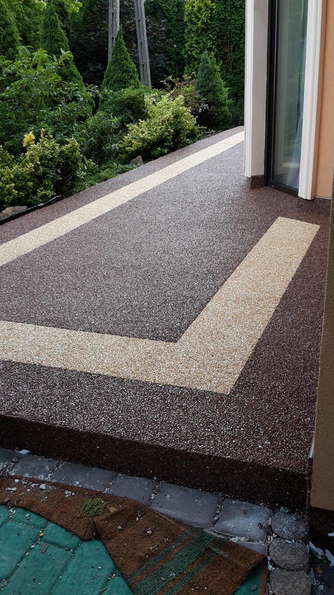
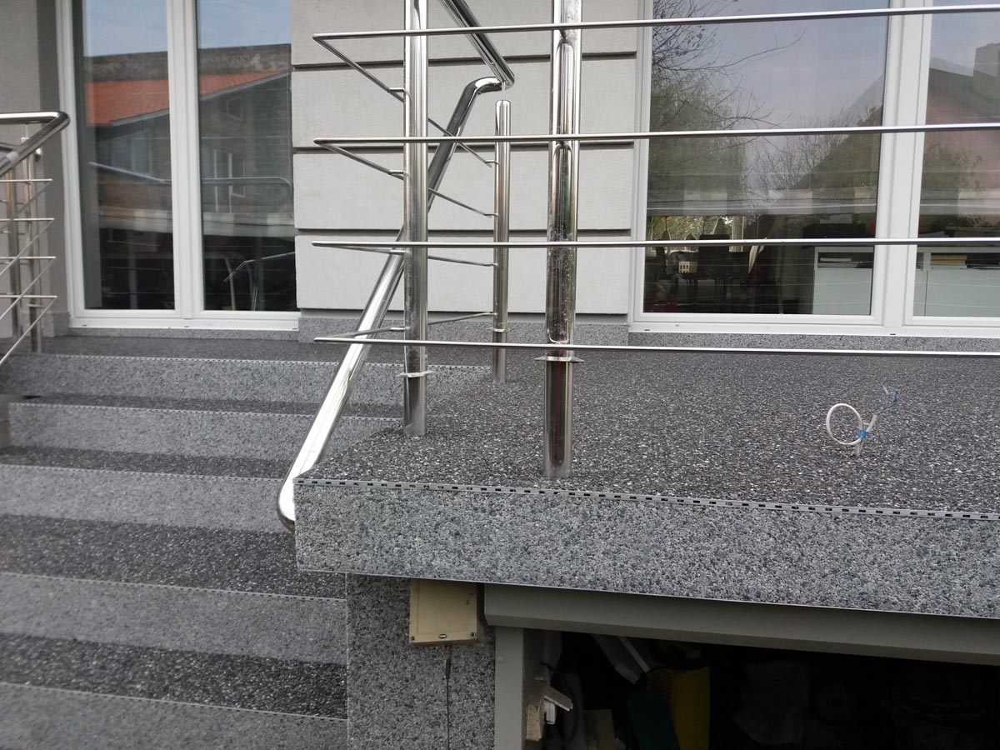
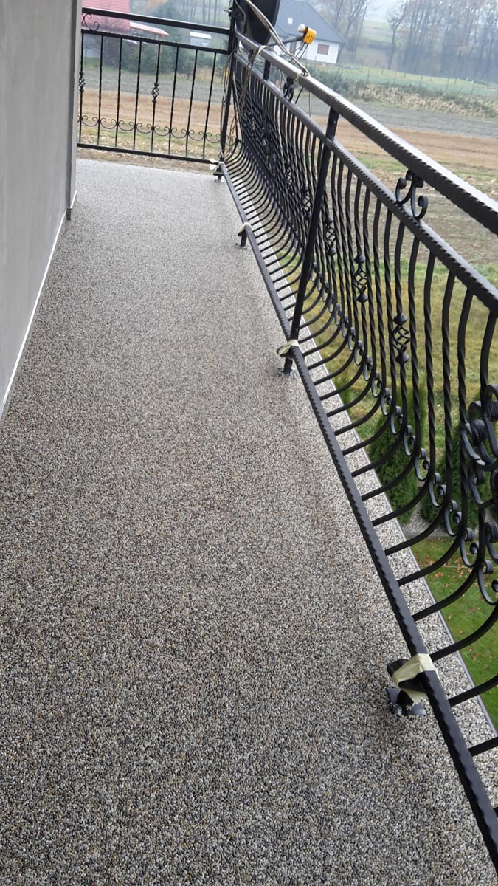
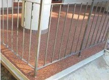

System Kamienne Dywany TopStone to kompletne systemowe rozwiązanie dla powierzchni płaskich. Unikatowe rozwiązania oraz zastosoane materiały tworzą produkt, który jest odporny na działanie czynników zewnętrznych takich jak deszcz, śnieg oraz mróz. System ten poprzez unikalną technologię zapewnia ochronę powierzchni przed szkodliwymi czynnikami atmosferycznymi. NARESZCIE DOSTĘPNY KOMPLETNY SYSTEM ZASTĘPUJĄCY PŁYTKI CERAMICZNE SPOSÓB APLIKACJI: